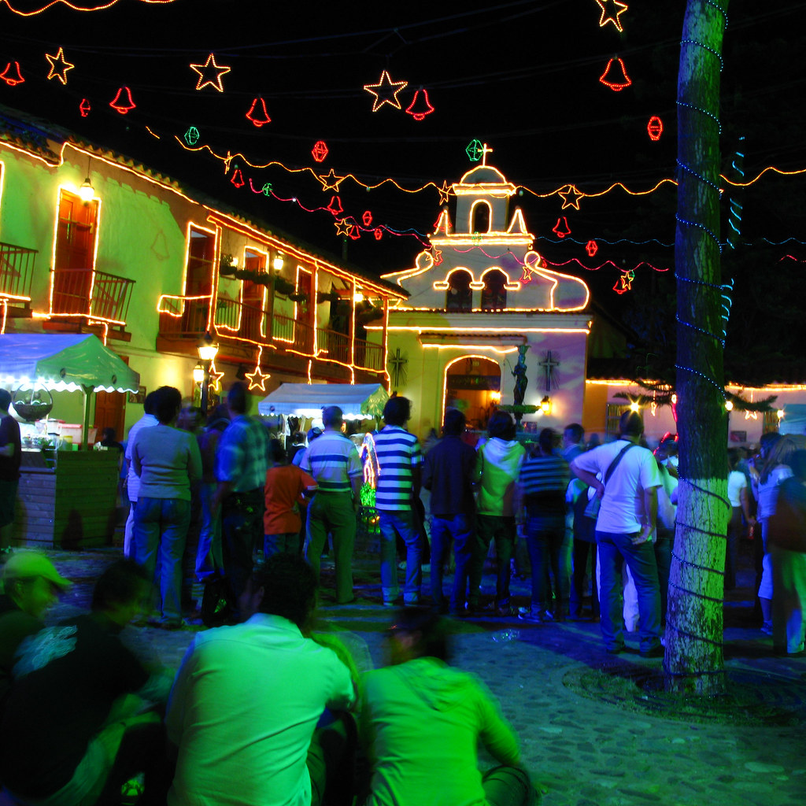
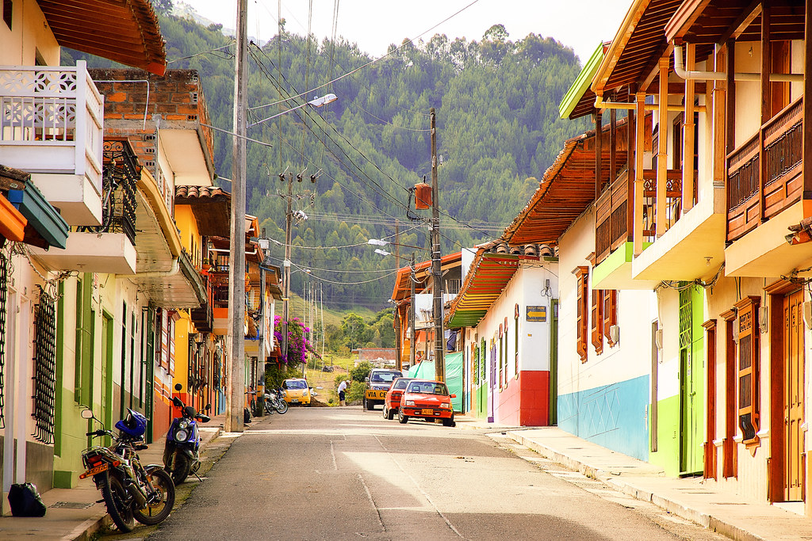
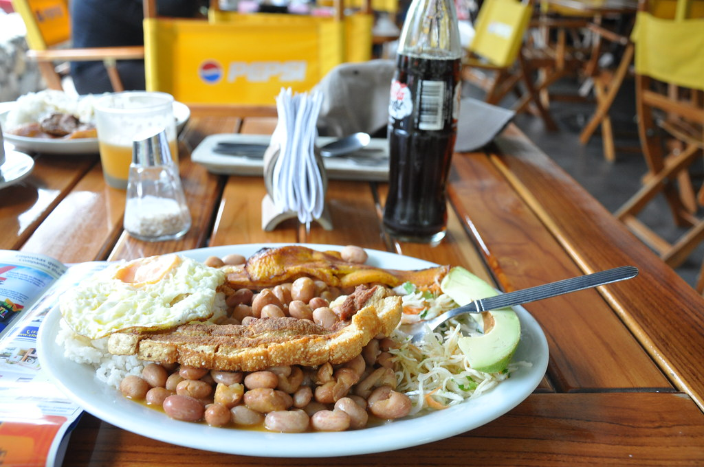

Alumbrado y velitas
Diciembre
La noche de las velitas abre la Navidad, y el alumbrado de Medellín queda a un trayecto corto desde el hotel.
El pueblo
Sabaneta es de los pocos lugares del Valle de Aburrá donde todavía se camina el pueblo. El hotel está a pocas cuadras del parque, y desde ahí todo queda cerca.

El corazón
El Parque de Sabaneta es el centro de todo: la gente se sienta, conversa, toma café y se queda hasta tarde. Al lado está la Iglesia de Santa Ana, uno de los destinos de turismo religioso más visitados de Antioquia y el punto de partida de nuestro recorrido de templos.
Alrededor hay restaurantes, panaderías y esa vida de pueblo que la ciudad perdió hace rato. Todo a pocas cuadras del hotel.

La mesa
La gastronomía paisa de Sabaneta no está en cartas de autor: está en las fondas del parque, en los buñuelos que se hacen grandes de verdad y en el desayuno que se sirve sin apuro.
En el hotel arrancas con desayuno incluido. El resto del día lo resuelve el pueblo, y te decimos dónde.
El calendario
Hay épocas en las que Sabaneta se transforma. Si puedes elegir fechas, estas valen la pena.

Diciembre
La noche de las velitas abre la Navidad, y el alumbrado de Medellín queda a un trayecto corto desde el hotel.

Agosto
La tradición silletera se vive en toda la región. Desde el hotel coordinamos la visita a fincas de silleteros.
Calendario local
Las fiestas del pueblo y sus tradiciones propias. Escríbenos y te contamos qué hay en tus fechas.
Distancias